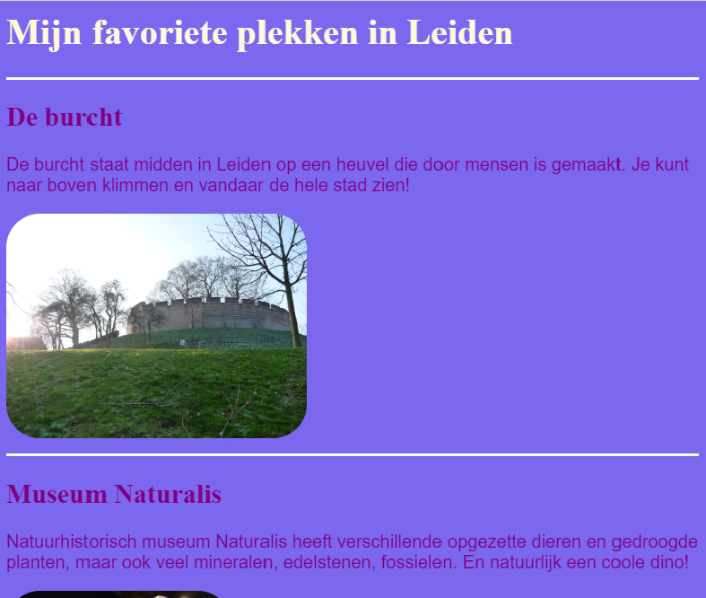
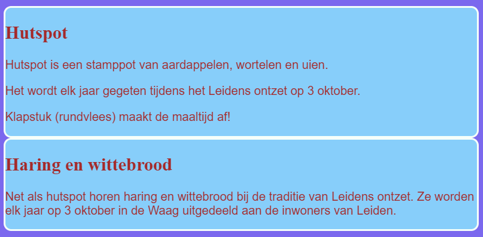

Het schrijven van CSS-regels voor elementen zoals section en p is geweldig, maar wat als je wil dat
sommige er anders uitzien dan andere? Hier leer je hoe je verschillende stijlregels toepast op elementen
van hetzelfde type en een ander thema maakt voor elke pagina op je website!
styles.css en voeg het volgende toe - zorg ervoor dat je de punt vooraan plaatst!
.lijnErboven {
border-top-style: solid;
border-top-width: 2px;
border-top-color: #F5FFFA;
padding-bottom: 10px;
}
attracties.html (of het HTML-bestand waaraan je werkt als je je eigen project gebruikt) en voeg het volgende attribuut toe aan elke section tag:
<section class="lijnErboven">
Je zou boven elke sectie op de pagina een lijn moeten zien verschijnen. Gefeliciteerd - je hebt zojuist je eerste CSS-class gebruikt!
section tags. Je zal zien dat alleen de regels waaraan je het attribuut class="lijnErboven" hebt toegevoegd, de lijn bovenaan hebben.
styles.css:
.vetKader {
background-color: #87CEFA;
color: #A52A2A;
border-style: solid;
border-width: 2px;
border-color: #F5FFFA;
border-radius: 10px;
}
section tags op de 'Eten in Leiden' pagina van de website, als volgt:
<section class="vetKader">.
Het ziet er vet uit, maar nu zijn de secties allemaal samengeplet.

Je kan zoveel CSS classes aan een element toevoegen als je maar wil. Schrijf gewoon de namen van alle klassen die je wil gebruiken binnen het class attribuut (vergeet niet: zonder de punt!), met spaties ertussen.
styles.css de volgende CSS class aan:
.beetjeRuimte {
padding: 10px;
margin-top: 20px;
}
html code de nieuwe class toe aan elk van de section tags waar je aan werkte, zoals dit:
<section class="vetKader beetjeRuimte">
Met CSS classes kun je dus kiezen welke elementen je wilt opmaken en kun je dezelfde set stijlregels opnieuw gebruiken voor alle elementen die je wilt.
index.html en voeg de klasse vetKader toe aan het main element of een ander element op de pagina. Je kunt het later weer verwijderen!
<main class="vetKader">
Zo ziet de home pagina eruit met de CSS class. De class lijnErboven is ook aan de img tag toegevoegd met de afbeelding van Tito.
Gebruik CSS classes om een paar verschillende formaten voor je afbeeldingen te maken, bijvoorbeeld
.kleineAfbeelding en .grotereAfbeelding. Haal vervolgens het attribuut width van elk van de img tags weg en voeg in plaats daarvan de juiste class toe.